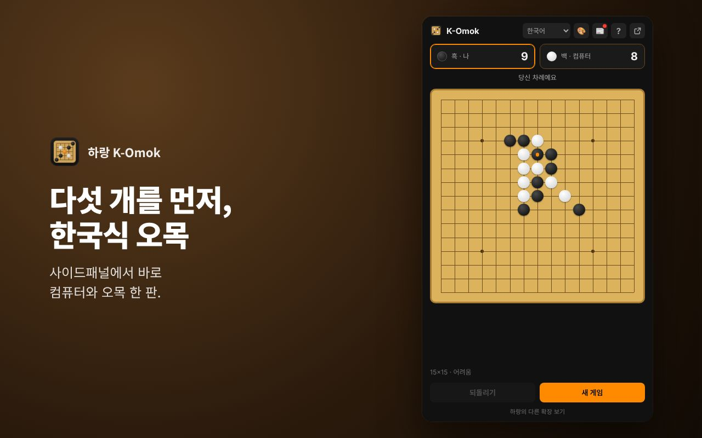
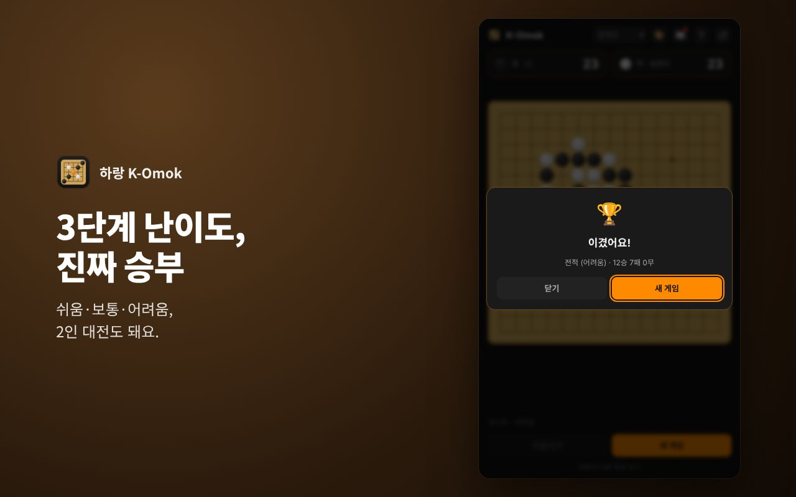

HARANG
HARANG

오목 규칙
- 흑과 백이 번갈아 판의 교차점에 돌을 하나씩 놓아요. 흑이 먼저 둬요.
- 가로·세로·대각선 중 한 줄로 내 돌 5개를 먼저 이으면 이겨요.
- 하랑 K-Omok은 자유 오목 규칙이라 금수(33·44·장목)가 없어요. 6개 이상 이어도 이겨요.
이기는 요령
- 상대가 열린 3(양쪽이 비어 있는 3개)을 만들면 바로 막아야 해요. 그대로 두면 열린 4가 돼서 막을 수 없어요.
- 내 돌로 3과 4를 동시에 만드는 자리를 찾으면 거의 이겨요. (자유 오목이라 33도 가능!)
- 처음에는 가운데에 두고, 내 돌끼리 대각선으로 이어 가면 공격 길이 많아져요.
하랑 K-Omok 특징
- 컴퓨터 대전 3단계 (쉬움·보통·어려움) + 한 화면 2인 대전
- 판 크기 13×13 · 15×15 · 19×19
- 판 테마 3가지: 나무 · 종이 · 하랑 다크
- 되돌리기, 단계별 전적 기록
- 끝내지 않은 판은 이어서
- 사이드패널 또는 팝업창으로
- 9개 언어 지원
- 계정·광고·추적 없음, 완전 무료
자주 묻는 질문
무료인가요?
네, 모든 기능이 무료이고 광고도 없어요.
렌주 규칙(금수)도 되나요?
지금은 자유 오목 규칙만 있어요. 누구나 쉽게 즐길 수 있는 규칙이에요.
개인정보를 수집하나요?
아니요. 설정과 전적은 내 컴퓨터에만 저장돼요.